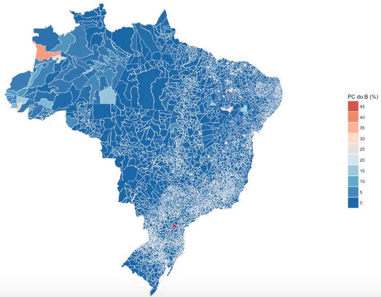

Map-making with R and electionsBR
For those interested in Brazilian politics, there’s a great new package called electionsBR (those who understand Portuguese can find a post on it here). This package takes data from the Tribunal Superior Eleitoral and makes it available in a tidy format for users of R. Given my recent obsession with map-making, I think it’s only natural I’d want to make maps of Brazil with this package.
So, what can we do with it? Well, how about a map of how Brazilians voted in the general election of 2014? To do this, we can use electionsBR to get the election data, and a mixture of tidyverse and some mapping and plotting packages:
library(tidyverse)
library(electionsBR)
library(ggmap)
library(rgdal)
library(stringi)
library(scales)
library(maptools)
library(RColorBrewer)The vote_mun_zone_fed() function takes a single argument, year, as an integer. There are quite a lot of data, so it takes a little while to download.
Mun <- vote_mun_zone_fed(2014)Once we have these data, we can use the tidyverse to clean it up and organize it they way we want. I’m going to change the character encoding to ASCII, using the stringi package, and select only the columns I need.
Mun <- Mun %>%
select(SIGLA_UF, DESCRICAO_CARGO, CODIGO_MUNICIPIO, TOTAL_VOTOS,
NUMERO_CAND, NOME_MUNICIPIO, NUM_TURNO, SIGLA_PARTIDO) %>%
mutate(NOME_MUNICIPIO = stri_trans_general(NOME_MUNICIPIO, "Latin-ASCII"))One interesting thing we could do with this dataset is map the percentage of the electorate that voted for Dilma. We’ll need shapefiles for Brazil, which you can get from gadm.org.
We’ll also need to isolate the vote for Dilma and then calculate the proportion in each municipality that voted for her. There were also two rounds of voting, so we can show each one. The code below does this for the first round, to do the same thing for the second round, we just change the first call to filter to NUM_TURNO == 2.
Pres1 <- Mun %>%
filter(DESCRICAO_CARGO == "PRESIDENTE", NUM_TURNO == 1,
SIGLA_UF != "ZZ") %>%
group_by(NUMERO_CAND, CODIGO_MUNICIPIO) %>%
mutate(SUM = sum(TOTAL_VOTOS)) %>%
distinct(CODIGO_MUNICIPIO, .keep_all=T) %>%
ungroup() %>%
group_by(CODIGO_MUNICIPIO) %>%
mutate(PERC = TOTAL_VOTOS/sum(TOTAL_VOTOS)*100) %>%
arrange(SIGLA_UF, NOME_MUNICIPIO) %>%
ungroup() %>%
filter(NUMERO_CAND == 13)Next, we read in our shape files. We have some work to do to tidy up the names of the municipalities and to correct for coding errors.
BRmap <- readOGR(dsn = "BRA_adm_shp", layer = "BRA_adm3", verbose = FALSE)
BRmap@data$NAME_2 <- BRmap@data$NAME_2 %>%
as.character() %>%
stri_trans_general("Latin-ASCII") %>%
toupper()Let’s see what municipalities are missing from our electionsBR municipality data.
'%ni%' <- Negate('%in%')
unique(BRmap@data$NAME_2[which(BRmap@data$NAME_2 %ni% Mun$NOME_MUNICIPIO)])
[1] "BARRA DA CHOCA" "DIAS D'VILA"
[3] "LIVRAMENTO DO BRUMADO" "MUQUEM DE SAO FRANCISCO"
[5] "OLIVERIA DOS BREJINHOS" "PAU BRAZIL"
[7] "QUIJINGUE" "ITAPAJE"
[9] "MISSO VELHA" "SAO JOAO DO BELM"
[11] "SAO LUIZ DO CURU" "GUIA BRANCA"
[13] "ILHA TRINDADE" "ILHAS DE MARTIM VAZ"
[15] "AMERICANO DO BRAZIL" "BRASABRANTES"
[17] "MATEIRA" "PORTEIRO"
[19] "SANTA RITA DE ARAGUAIA" "ALTO ALEGRE DO MARANHO"
[21] "AMAPA DO MARANHO" "ANAPUROS"
[23] "BOM JARDIN" "HUMBERTO CAMPOS"
[25] "MATES DO NORTE" "VICTORINO FREIRE"
[27] "BATAIPORA" "BARRA DOS BUGRE"
[29] "POXOREO" "SAO FELIX XINGU"
[31] "BANDIERA DO SUL" "BRASOPOLIS"
[33] "CACHOEIRA DE PAJES" "CAMPOS VERDES DE GOIAS"
[35] "CARAVALHOPOLIS" "CASSITERITA"
[37] "CHAVESLANDIA" "FELISBERTO CALDEIRA"
[39] "FRANCISCO DUMON" "GOUVEA"
[41] "ITABIRINHA DE MANTENA" "ITACARAMBIRA"
[43] "PIEDADE DO PONTE NOVA" "PIUI"
[45] "QUELUZITA" "SAO FRANCISCO DE OLIVEIRA"
[47] "SAO SEBASTIO DA VARGEM ALEGRE" "SAN ANTONIO DO ITAMBE"
[49] "SAN ANTONIO DO RIO ABAI" "SANTA RITA DO IBITIPOCA"
[51] "SANTA RITA ITUETO" "ALMERIM"
[53] "BRAGANGA" "ME DO RIO"
[55] "BOQUEIRAO DOS COCHOS" "DESTERRO DE MALTA"
[57] "MONGEIRO" "PEDRA LAVADRA"
[59] "RIACHO" "SAO MIGUEL TAIPU"
[61] "SERIDO" "ALTAMIRA DO PARAN"
[63] "ARAPU" "ASSIS CHATEAUBRI"
[65] "CAMPO" "CONSELHEIRO MAYRINCK"
[67] "IVATUVA" "JABUTI"
[69] "SAO ANTONIO DE SUDOESTE" "SALTO DO LONDRA"
[71] "SANTA CRUZ DE MONTE CASTE" "SANTA ISABEL DO OESTE"
[73] "TEXEIRA SOARES" "TIBAJI"
[75] "VENCESLAU BRAS" "VILA ALTA"
[77] "BARRA DE GUABIRA" "CABO"
[79] "CACHOERINHA" "IGARACU"
[81] "LAGOA DO ITAENGA" "SAO JOAO DO BELMONTE"
[83] "SAO JOAQUIN DO MONTE" "SITIO DOS MOREIRAS"
[85] "TAMBE" "PEDRO LI"
[87] "SAO JOAO PIAUI" "SAO MIGUEL TAPUIO"
[89] "CAMPOS" "CAREPEBUS"
[91] "CONCEICAO MACABU" "ENGENHEIRO PAULO DE FRONT"
[93] "PARATI" "VALENCIA"
[95] "ACU" "AUGUSTO SEVERO"
[97] "GOVERNADOR DIX-SEPT ROSAD" "JANUARIO CICCO"
[99] "JARDIM-PIRANHAS" "JUNCO"
[101] "LAGOA DE ANTA" "LAGOAS DE VELHOS"
[103] "SAO MIGUEL DE TOUROS" "BAJE"
[105] "BARO" "BOA VISTA DAS MISSES"
[107] "CAMAGUA" "CAMPO REAL"
[109] "CHIAPETA" "DILERMANO DE AGUIAR"
[111] "ERVAL" "INHACOR"
[113] "LAGOA MIRIM" "MARCIONILIO DIAS"
[115] "MAXIMILIANO DE ALMAEIDA" "PALMITINHOS"
[117] "SAO MIGUEL DAS MISSES" "UREA"
[119] "VITORIA DAS MISSES" "ALTA FLORESTA D'OESTE"
[121] "ALVORADA D'OESTE" "ESPIGAO D'OESTE"
[123] "NOVA BRASILANDIA D'OESTE" "SAO FELIPE D'OESTE"
[125] "SANTA LUZIA D'OESTE" "ALFREDO MARCONDE"
[127] "APARECIDA DOESTE" "BRODOSQUI"
[129] "DULCINOPOLIS" "EMBU"
[131] "ESTRELA DO OESTE" "FERNO"
[133] "FERRAZ DE VASCON" "FLORINIA"
[135] "GUARANI DO OESTE" "IPAUCU"
[137] "JABUTICABAL" "LUISIANIA"
[139] "PALMEIRA DO OESTE" "PARANAPAREMA"
[141] "PIRACUNUNGA" "PONTES GESTRAL"
[143] "QUITANA" "SAO LUIZ DO PARAITINGA"
[145] "SALTO DO PIRAPORA" "SANTA CLARA DO OESTE"
[147] "SANTA RITA DO OESTE" "GRAO PARA"
[149] "LUIZ ALVES" "PAULO LOPEZ"
[151] "PICARRAS" "PONTA ALTA"
[153] "BUQUIM" "GRACHO CARDOSO"
[155] "ITAPORANGA DAJUDA" "NOSSA SENHORA APRECIDO"
[157] "COUTO MAGALHAES" "MOSQUITO"Hmmm, that’s a little annoying, but some are easy to fix, so in the end, we’ll be missing only a few municipalities because of these coding differences. Some others are harder to figure out: I don’t know if the errors are in the TSE’s data, or in this geo-data. I don’t feel like spending a long time recoding stuff though, so let’s leave it aside for now.
BRmap@data$NAME_2[BRmap@data$NAME_2=="ASSIS BRAZIL"] <- "ASSIS BRASIL"
BRmap@data$NAME_2[BRmap@data$NAME_2=="JOINVILE"] <- "JOINVILLE"
BRmap@data$NAME_2[BRmap@data$NAME_2=="MACEIO (CAPITAL)"] <- "MACEIO"
BRmap@data$NAME_2[BRmap@data$NAME_2=="SAO GABRIEL DE CAHOEIRA"] <- "SAO GABRIEL DA CACHOEIRA"
BRmap@data$NAME_2[BRmap@data$NAME_2=="NOVO BRAZIL"] <- "NOVO BRASIL"
BRmap@data$NAME_2[BRmap@data$NAME_2=="PERI-MIRIM"] <- "PERI MIRIM"
BRmap@data$NAME_2[BRmap@data$NAME_2=="SEM-PEIXE"] <- "SEM PEIXE"
BRmap@data$NAME_2[BRmap@data$NAME_2=="BRAZIL NOVO"] <- "BRASIL NOVO"
BRmap@data$NAME_2[BRmap@data$NAME_2=="OLHOS-D'AGUA"] <- "OLHOS D'AGUA"
BRmap@data$NAME_2[BRmap@data$NAME_2=="OLHO-D'AGUA DO BORGES"] <- "OLHO D'AGUA DO BORGES"
BRmap@data$NAME_2[BRmap@data$NAME_2=="SERRA DA SAUDAD"] <- "SERRA DA SAUDADE"
BRmap@data$NAME_2[BRmap@data$NAME_2=="PEIXE BOI"] <- "PEIXE-BOI"
BRmap@data$NAME_2[BRmap@data$NAME_2=="RICAHO DOS CAVALOS"] <- "RIACHO DOS CAVALOS"
BRmap@data$NAME_2[BRmap@data$NAME_2=="BRAZILEIRA"] <- "BRASILEIRA"
BRmap@data$NAME_2[BRmap@data$NAME_2=="SUL BRAZIL"] <- "SUL BRASIL"
BRmap@data$NAME_2[BRmap@data$NAME_2=="FLORINIAPOLIS"] <- "FLORIANOPOLIS"
BRmap@data$NAME_2[BRmap@data$NAME_2=="BON JESUS DOS PERDOES"] <- "BOM JESUS DOS PERDOES"
BRmap@data$NAME_2[BRmap@data$NAME_2=="OLHO-D'AGUA DO BORGES"] <- "OLHO D'AGUA DO BORGES"
BRmap@data$NAME_2[BRmap@data$NAME_2=="MISSO"] <- "MISSAO"
BRmap@data$NAME_2[BRmap@data$NAME_2=="SALIDAO"] <- "SOLIDAO"
BRmap@data$NAME_2[BRmap@data$NAME_2=="SAO JOAO DAS DUAS PONTE"] <- "SAO JOAO DAS DUAS PONTES"
BRmap@data$NAME_2[BRmap@data$NAME_2=="ORLEAES"] <- "ORLEANS"We can use fortify to get all this into something useful for ggplot() to deal with. Then we can add in all the data we have for Dilma’s vote totals and then we’re ready to plot something.
Brasil <- fortify(BRmap, region = "ID_2") %>%
mutate(id = as.integer(id)) %>%
full_join(BRmap@data, by =c("id" = "ID_2")) %>%
select(c(id, long, lat, order, hole, piece, group, NAME_2)) %>%
rename(NOME_MUNICIPIO = NAME_2)
head(Brasil)
id long lat order hole piece group NOME_MUNICIPIO
1 1 -67.10586 -9.688110 1 FALSE 1 1.1 ACRELANDIA
2 1 -67.05984 -9.706651 2 FALSE 1 1.1 ACRELANDIA
3 1 -66.80647 -9.814520 3 FALSE 1 1.1 ACRELANDIA
4 1 -66.62003 -9.894039 4 FALSE 1 1.1 ACRELANDIA
5 1 -66.58875 -9.903196 5 FALSE 1 1.1 ACRELANDIA
6 1 -66.62333 -9.923209 6 FALSE 1 1.1 ACRELANDIA
Dilma_1 <- left_join(Brasil, Pres1) %>%
mutate(PERC = ifelse(is.na(PERC), mean(PERC, na.rm=T), PERC))ggplot() +
geom_polygon(data = Dilma_1, aes(x = long, y = lat,
group = group, fill = PERC),
color = "white", size = 0.1) +
scale_fill_distiller(palette = "RdBu",
breaks = pretty_breaks(n = 8)) +
guides(fill = guide_legend(reverse = TRUE)) +
labs(fill = "Dilma (%)") +
theme_nothing(legend = TRUE) +
xlim(range(Dilma_1$long)) + ylim(range(Dilma_1$lat)) +
coord_map()
We can see that even in 2014, Dilma’s support in the South-east of the country was not overwhelming.
We can also use electionsBR to look at other items of interest, such as the share of the party vote. For example, perhaps you’re interested in whether the Communist Party of Brazil has strongholds in the country. All we need to do is subset the Mun dataframe that we downloaded earlier by DESCRICAO_CARGO == "DEPUTADO FEDERAL" and SIGLA_PARTIDO == "PC do B". Apart from these changes, everything else can be done in the same way. Once we have this dataframe (which I’ll call pc), we plot it in the same way:
ggplot() +
geom_polygon(data = pc, aes(x = long, y = lat, group = group,
fill = PERC),
color = "white", size = 0.1) +
scale_fill_distiller(palette = "RdBu",
breaks = pretty_breaks(n = 8)) +
guides(fill = guide_legend(reverse = TRUE)) +
labs(fill = "PC do B (%)") +
theme_nothing(legend = TRUE) +
xlim(range(pc$long)) + ylim(range(pc$lat)) +
coord_map()
Not a very Communist country, by the looks of things.
Well, that’s a brief look at electionsBR. Data for other years and elections is available, as well as data at other administrative levels, and not just the President and Federal Deputies. The TSE also holds data on the background of the candidates and their campaign spending, all of which can be utilized with electionsBR. And if you fancy combining all this information with legislative behaviour from inside the Chamber of Deputies, just load the bRasilLegis package and you have a wealth of data on Brazilian Federal Deputies at your fingertips. Indeed, I’m proud to be involved in both packages. It’s great to help to make the access to these data easier for those interested in Brazilian politics.
P.s. This blog post was written using R Notebooks. I’d have to say that I really like R Notebooks so far, especially the preview. Try it out.
Update: it seems that some folks might be running into problems running the scripts above, with R spitting out: Error: isTRUE(gpclibPermitStatus()) is not TRUE. The solution to this is to make sure you have rgdal or rgeos or a similar mapping package installed.